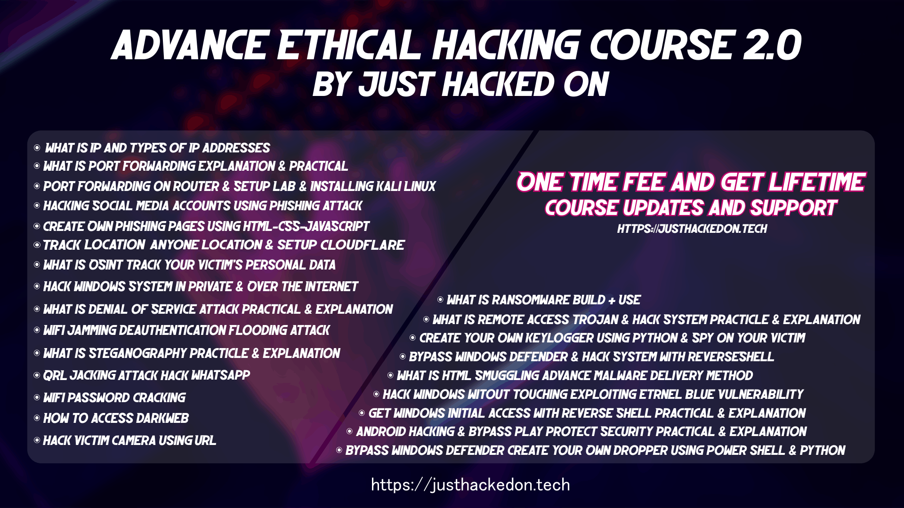

Welcome to our comprehensive Ethical Hacking course! If you're interested in the world of cybersecurity and want to learn how to protect computer systems and networks from malicious attacks, you're in the right place.

During this course, you will gain hands-on experience with various hacking techniques, tools, and methodologies used by ethical hackers to identify and fix vulnerabilities in systems. Our expert instructors will guide you through the essential concepts and practices of ethical hacking, making it suitable for beginners and intermediate learners alike.
Course Highlights:
- What is IP and TYPES of IP Adresses
- What is Port Forwarding Explanation & Practical
- Port Forwarding on Router & Setup Lab & Installing Kali Linux
- Hacking Social Media Accounts Using Phishing Attack
- Create Own Phishing Pages Using HTML-CSS-JavaScript
- Track Location Anyone Location & setup Cloudflare
- Hack Victim Camera Using UR
- Hack Windows System in Private & Over the Internet
- Hack Windows witout Touching Exploiting Etrnel Blue Vulnerability
- Get Windwos Initial Access with Revesre Shell Practicle & Explanation
- Bypass Windows Defender & Hack System with ReverseShell
- What is Remote Access Trojan & Hack System Practicle & Explanation
- What is Ransomware Build + Use
- Android Hacking & Bypass Play Protect Security Practicle & Explanation
- What is Denial of Service Attack Practicle & Explanation
- What is OSINT Track Your Victim's Data
- Wifi Jamming Deauthentication Flooding Attack
- WiFi Password Cracking
- Create Your Own Keylogger using Python & Spy on Your Victim
- Bypass Windows Defender Create Your Own Dropper Using Powershell & Python
- What is HTML Smuggling Advance Malware Delivery Method
- What is Steganography Practicle & Explanation
- How to Access Darkweb
- QRL JACKING Attack Hack Whatsapp
By the end of the course, you will have the skills and knowledge to perform ethical hacking tasks, allowing you to pursue a rewarding career in cybersecurity or strengthen your organization's defense against cyber threats.
Ready to get started on your journey to becoming an ethical hacker? Enroll now and join us in this exciting learning experience!
Enroll Now